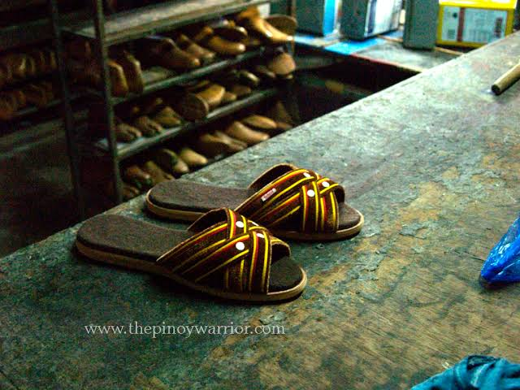
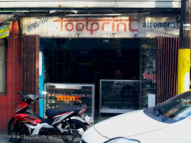

 
Because of the innovative shoemaking skills of the people of Pateros, a different line of footwear emerged and it was called
"Alfombra." The name means "carpet" in Spanish, and literally, the alfombra is a pair of slippers with carpeting. It is one
of the best indoor slippers because of its comfort and durability. Colorful and very appealing, every pair is an absolute
beauty. Seemingly, the alfombra is uniquely Filipino and only skilled shoemakers of Pateros can do it correctly.
To make an alfombra, one has to have the skill and expertise of a shoemaker. Every pair undergoes a long and tedious process,
and many hands have to help in making it. A well-made alfombra can last a few years. There was even a story of an old man
who loved his alfombra pair so much that after 5 years of using it, he brought it to the shop to have it repaired. Of course
his slippers were in a really bad condition, but after 5 years of use, it was a very good investment.